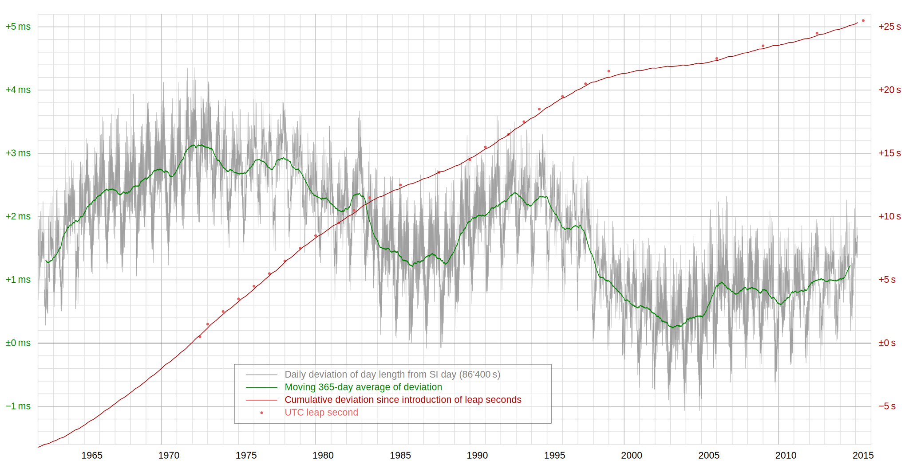

Look before you "Leap"
- Almost everyone (well programmers anyways) think of a day as being 86400 seconds
- This is more or less correct, which is the problem
The Earth's rotation speed varies based on several factors:
- Changes in mantle convection patterns
- Post glacial rebound of the Earth's surface
- Major earthquakes
- Tidal friction
Earth's Rotation Variance

Temporal Reality
- As a result of this unpredictibility, leap second changes are published only 6 months in advance
- By convention, leap seconds are only inserted or removed at the end of June 30 or December 31
- However in theory they can occur at the end of any month according to the UTC standard (think 'Apocalypse' if it came to that)
Temporal Fantasy
- According to the POSIX standard, there are exactly 86400 seconds in a day
- Thus there is no real way to represent either the variance of 86399 or 86401 properly
System Clocks in Unix (yes there is more then one!)
From the OpenBSD man pages: clock_gettime(2)
- CLOCK_REALTIME - time that increments as a wall clock should
- CLOCK_MONOTONIC - time that increments as a wall clock should but whose absolute value is meaningless and cannot jump, providing accurate realtime interval measurement, even across suspend and resume
- CLOCK_UPTIME/CLOCK_BOOTTIME - time whose absolute value is the time the system has been running and not suspended, providing accurate uptime measurement, both absolute and interval
For the addition of a second:
- Most applications typically use
CLOCK_REALTIME which is affected by both NTP adjustments as well as leap seconds
- All is normal up until 23:59:59.999 UTC
- On the first kernel tick of the clock after 00:00:00 is reached the clock is reset back to 23:59:59
- To programs on the system it appears as though time has run backwards
Addition of second to CLOCK_REALTIME
#!/usr/bin/env perl
use common::sense;
use Time::HiRes qw{time};
print time; # 915_148_799.000
print time; # 915_148_799.999
print time; # 915_148_800.000
print time; # 915_148_799.000 ‹-- We've invented time travel!
print time; # 915_148_799.999
print time; # 915_148_800.000
For the subtraction of a second (this has not yet happened):
- All is normal up until 23:59:58.999 UTC
- On the first kernel tick of the clock after 23:59:59.000 is reached the clock is set forward to 00:00:00
- To programs on the system it appears as though they missed a second, which normally isn't an issue for non real time systems
Subtraction of second from CLOCK_REALTIME
#!/usr/bin/env perl
use common::sense;
use Time::HiRes qw{time};
print time; # 915_148_798.000
print time; # 915_148_798.999
print time; # 915_148_800.000 ‹-- systemd's hogging the CPU again...
print time; # 915_148_800.999
Hairy Effects
- When adding a leap second, 915148799.500 is now an ambiguous value that refers to two distinct points in time (a manmade wormhole)
- When subtracting a leap second, 915148799.500 now refers to a non existent point in time! (a manmade singularity)
- How do you unambiguously sort timestamps? Or even preserve uniqueness? (eg logs, audit entries, generated IDs, etc)
- How do you correctly calculate elapsed time? (it will be negative!)
- Leap second insertions have been known to bring down vital infrastructure (e.g. Reddit) and cause infinite loops in poorly written software!
Mitigations for Hackers
- Don't write code that assumes that time can't flow backward! (cause who would do that?)
- Don't assume that timestamps will be unique, and don't solely rely on time to generate IDs
- Do use
CLOCK_MONOTONIC for those applications where the passage of time is more important than wall accuracy
- Do write automated tests that simulate clock discontinuities (wait until your boss is on vacation)
Mitigations for Operators
- Ignore the leap second and have NTP slowly 'catch up' the system later - but this takes up to 2 days to get back to millisecond clock accuracy (especially bad for clusters)
- Slew the clock so that it is slowed over the course of 10s or 100s of seconds just before midnight (your clock is 'wrong' for longer)
- Change your NTP servers to 'smear' the time change in their served time. Clients won't know the difference (need to run your own private NTP servers)
- When all else fails, just turn it off and then turn it on (often the simplest and safest) - optionally let your customers know in advance!